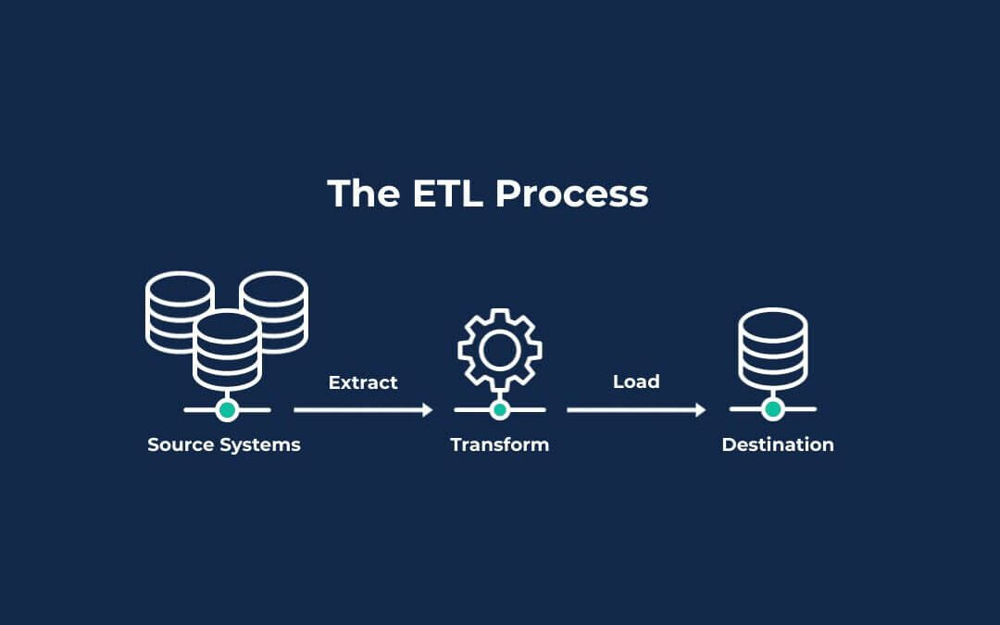

After graduating from W&M, I have accumulated over four years of experience as a data analyst. I derive great satisfaction from extracting insights from data and using them to inform the decisions of senior leadership. Data is unwavering, but people's interpretations can vary. The more I delve into this field, the more adept I become at discerning whether visualizations or calculations have been manipulated in real-world scenarios.

Markov Chain Model- Developed multi-touch attribution model through Markov Chain using Python and Alteryx to
understand media mix efficiency
- 
Inpatient Data Analysis - Created ETL to clean internal data and combined with census data, providing insights about
measure metrics on inpatient rate
-
banking institution ML Project - Built KNN, GLM, LDA models to predict whether a customer would sign up for a new bank term
deposit
-
International students’ grad school application - Built PAC, Ridge, Lasso, SVM and Random Forest models to predict which students are eligible